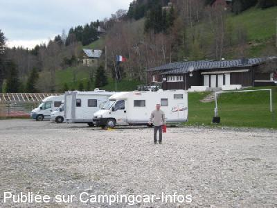
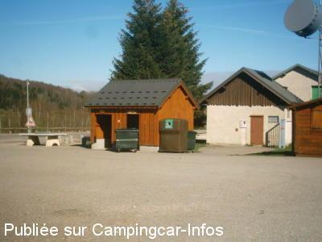

ASN = Aire de services avec stationnement nuit possible de :
ALPE DU GRAND SERRE
(N° 665)
Accès/adresse :
D114
38350 ALPE DU GRAND SERRE
38350 ALPE DU GRAND SERRE
Latitude : (Nord) 45.02865° Décimaux ou 45° 1′ 43′′
Longitude : (Est) 5.85686° Décimaux ou 5° 51′ 24′′
Tarif : 2016
Stationnement, services : 5 €
Type de borne : Autre
Services :


Commerces et pistes de ski à proximité
Autres informations :
25 emplacements
Vidanges au seau
Le restaurant le MELEZE offre l'apéritif du repas à toute personne se présentant et faisant référence à CCI

Le 05/05/2009 par patsy.jp

Le 12/05/2005 par JBR 13
de
guy59
le 01/01/2016 :
nous y sommes passé fin décembre . endroit très grand et très calme . les pistes de ski sont très proches
le tarif est de 5 euros tout compris (stationnement , 220 volts 10 Amp., eau ,WC ,vidange au sceau et douche en été ) ,la station est dans un cadre magnifique. mais 2 petits bémols : 1)l'accès par Séchilienne est délicat avec la route a forte pente et très étroite par endroit (heureusement nous avons rencontré personne à la montée ) 2) très très peu de commerces : 1 sherpa et une boulangerie et quelques restaurants et magasins de sports . mais une station agréable avec des habitants sympa et idéale pour se reposer
nous y sommes passé fin décembre . endroit très grand et très calme . les pistes de ski sont très proches
le tarif est de 5 euros tout compris (stationnement , 220 volts 10 Amp., eau ,WC ,vidange au sceau et douche en été ) ,la station est dans un cadre magnifique. mais 2 petits bémols : 1)l'accès par Séchilienne est délicat avec la route a forte pente et très étroite par endroit (heureusement nous avons rencontré personne à la montée ) 2) très très peu de commerces : 1 sherpa et une boulangerie et quelques restaurants et magasins de sports . mais une station agréable avec des habitants sympa et idéale pour se reposer
de
débilobélix
le 19/09/2014 :
C'est fait : De passage début septembre 2014, le tarif est passé de gratuit à 5 euros par nuits (payable à la mairie ou à la personne qui passe plusieurs fois par jour)
Ca reste très démocratiques vu les services offerts (wc, douche, eau, électricité) et ca a eu pour effet de faire disparaitre les cc ventouses : deux sur place à mon arrivée.
C'est fait : De passage début septembre 2014, le tarif est passé de gratuit à 5 euros par nuits (payable à la mairie ou à la personne qui passe plusieurs fois par jour)
Ca reste très démocratiques vu les services offerts (wc, douche, eau, électricité) et ca a eu pour effet de faire disparaitre les cc ventouses : deux sur place à mon arrivée.
de
gégé62
le 11/08/2012 :
de passage pour la troisième fois, toujours les mêmes camping car ventouse branchés 220v. je suis resté 3 jours en autonome. encore merci a la commune mais il va falloir faire payer un jour ou l'autre et vous verraient ces fameux cc ventouse disparaitront.
en plus le jour de mon passage j'aurais eu besoin du 220v car frigo en panne au gaz. alors a bon entendeur salut.et encore merci a certain.
de passage pour la troisième fois, toujours les mêmes camping car ventouse branchés 220v. je suis resté 3 jours en autonome. encore merci a la commune mais il va falloir faire payer un jour ou l'autre et vous verraient ces fameux cc ventouse disparaitront.
en plus le jour de mon passage j'aurais eu besoin du 220v car frigo en panne au gaz. alors a bon entendeur salut.et encore merci a certain.
de
thierry76
le 13/09/2011 :
Avons découvert cette aire très agréable et très "chargée" fin Août.Seau tjs nécessaire pour vidange,pour le reste des utilités très bien avec en plus une douche propre et spacieuse.Cependant quelques CC ventouses accros des branchements 220v limités en nbre....
Point de départ idéal pour randos,site d'escalade et découverte du village.
Aire que je suppose être agréable l'hiver
Avons découvert cette aire très agréable et très "chargée" fin Août.Seau tjs nécessaire pour vidange,pour le reste des utilités très bien avec en plus une douche propre et spacieuse.Cependant quelques CC ventouses accros des branchements 220v limités en nbre....
Point de départ idéal pour randos,site d'escalade et découverte du village.
Aire que je suppose être agréable l'hiver
de
José
le 31/07/2010 :
Nous avons trouvé un très bon accueil, une aire agréable avec tous les services disponibles, WC et même une douche. Seul petit bémol, la vidange des eaux grises à faire au seau uniquement. Au petit chalet, on vous accueille avec le sourire pour les activités proposées et on vous prépare sur demande de belles salades ou autres. Le paiement de 5€ est à discrétion, mais si l'on veut continuer à trouver ce genre d'accueil, il faut JOUER LE JEU et ne pas partir avant l'ouverture du chalet. Commune très dynamique, balades superbes et accessibles à tous. Fin juillet, la fête de la montagne avec démonstrations de rollers, sculptures sur bois a la tronçonneuse, trial 4x4, marché campagnard, baptêmes hélico, 4x4 et moto... Un seul mot MERCI à la commune.
Nous avons trouvé un très bon accueil, une aire agréable avec tous les services disponibles, WC et même une douche. Seul petit bémol, la vidange des eaux grises à faire au seau uniquement. Au petit chalet, on vous accueille avec le sourire pour les activités proposées et on vous prépare sur demande de belles salades ou autres. Le paiement de 5€ est à discrétion, mais si l'on veut continuer à trouver ce genre d'accueil, il faut JOUER LE JEU et ne pas partir avant l'ouverture du chalet. Commune très dynamique, balades superbes et accessibles à tous. Fin juillet, la fête de la montagne avec démonstrations de rollers, sculptures sur bois a la tronçonneuse, trial 4x4, marché campagnard, baptêmes hélico, 4x4 et moto... Un seul mot MERCI à la commune.
de
marc
le 03/08/2009 :
Je confirme l'aire est superbe ainsi que le village et les environs. Dommage effectivement que certains abusent de l'électricité, alors que l'intensité maxi n'est prévue que pour alimenter le frigo, une TV et l'éclairage, c'est bien indiqué. Il faudrait aussi limiter la durée du stationnement! Le maire, très sympathique, est passé parmi les camping-cars et hélas, a constaté l'incident. Espérons que cela n'aura pas de conséquences.
Par ailleurs, à recommander les restaurant "Les Mélèzes", rapport qualité/prix imbattable, baisse de TVA et personnel très accueillant.
Je confirme l'aire est superbe ainsi que le village et les environs. Dommage effectivement que certains abusent de l'électricité, alors que l'intensité maxi n'est prévue que pour alimenter le frigo, une TV et l'éclairage, c'est bien indiqué. Il faudrait aussi limiter la durée du stationnement! Le maire, très sympathique, est passé parmi les camping-cars et hélas, a constaté l'incident. Espérons que cela n'aura pas de conséquences.
Par ailleurs, à recommander les restaurant "Les Mélèzes", rapport qualité/prix imbattable, baisse de TVA et personnel très accueillant.
de
Jean Claude
le 27/07/2009 :
J'arrive de passer 4 jours sur cette aire, le cadre est magnifique, les balades formidables et le cadre grandiose. Le seul bémol, il faut vidanger au seau.
Certains CC. abusent de la puissance des branchements éléctriques en utilisant des radiateurs, ce qui provoque le disjonctage de l'installation, privant l'ensemble des CC du confort de cette aire. Il ne faut pas être surpris que certaines communes nous refusent leur accueil.
J'arrive de passer 4 jours sur cette aire, le cadre est magnifique, les balades formidables et le cadre grandiose. Le seul bémol, il faut vidanger au seau.
Certains CC. abusent de la puissance des branchements éléctriques en utilisant des radiateurs, ce qui provoque le disjonctage de l'installation, privant l'ensemble des CC du confort de cette aire. Il ne faut pas être surpris que certaines communes nous refusent leur accueil.
de
DUVERNAY
le 24/07/2008 :
Nous venons de passer trois jours sur cette aire. La station est accueillante. Marmottes et renards sont visibles le matin à quelques centaines de mètres du village. Nous avons remis notre chèque au responsable de l'OT qui est très chaleureux. Le dynamisme employé par cette petite station (fêtes diverses) est à saluer.
On y mange de délicieuses fondues (restaurant sur la route du désert)
Nous venons de passer trois jours sur cette aire. La station est accueillante. Marmottes et renards sont visibles le matin à quelques centaines de mètres du village. Nous avons remis notre chèque au responsable de l'OT qui est très chaleureux. Le dynamisme employé par cette petite station (fêtes diverses) est à saluer.
On y mange de délicieuses fondues (restaurant sur la route du désert)
de
corinne
le 26/07/2007 :
Cette aire est très agréable, participation de 8€ pour les frais d'électricité et d'eau par jour, ce qui est normal.
Cette aire est très agréable, participation de 8€ pour les frais d'électricité et d'eau par jour, ce qui est normal.
de
le 21/05/2007 :
Aire de bivouac bien agréable et calme mise à la disposition des campings caristes. Mais la restera-t-elle longtemps ? En effet, pas de vidange des eaux grises si ce n'est au seau dans les toilettes et plein d'eau propre peu pratique depuis le lavabo des toilettes.
Aire de bivouac bien agréable et calme mise à la disposition des campings caristes. Mais la restera-t-elle longtemps ? En effet, pas de vidange des eaux grises si ce n'est au seau dans les toilettes et plein d'eau propre peu pratique depuis le lavabo des toilettes.
de
Sylvéric
le 23/08/2006 :
La montée fut longue mais quelle récompense! Une petite station dans un écrin de montagnes. Une aire accueillante Départ de belles randonnées. Dommage qu'il y ait si peu de commerces ouverts l'été.
La montée fut longue mais quelle récompense! Une petite station dans un écrin de montagnes. Une aire accueillante Départ de belles randonnées. Dommage qu'il y ait si peu de commerces ouverts l'été.